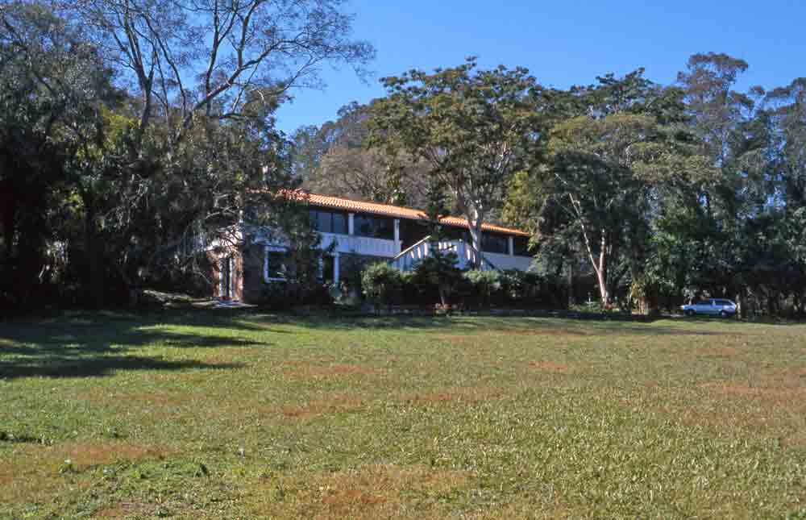

Un Paraguay que buscaba reconstruirse
La colonia nació durante el gobierno de Bernardino Caballero, en los años posteriores a la Guerra de la Triple Alianza. El Estado impulsaba la inmigración y la creación de colonias agrícolas. Una ley del 7 de junio de 1881 autorizó al Poder Ejecutivo a establecerlas; este contexto aparece en la historia publicada por la Municipalidad.
El 24 de agosto de 1881 es la fecha de fundación de San Bernardino como colonia. La historia municipal identifica a cinco familias iniciales llegadas de Berlín y a Christian Otto como jefe del grupo. Santiago Schaerer, suizo, asumió la primera administración. Otras nacionalidades se incorporaron después; reducir la ciudad a un único origen dejaría fuera parte de su historia.
El lago era el camino
Antes de las rutas actuales, la llegada desde Asunción se hacía en tren hasta Areguá, luego por tierra a un puerto y finalmente en embarcación a través del Ypacaraí, según la Municipalidad. Ese cruce explica por qué la costa aparece tan pronto en la memoria de la colonia. El lago fue acceso, paisaje y, con el tiempo, una de las grandes razones para venir.
El agua no aparece al final del recorrido: está desde el comienzo de la historia de la ciudad.
De colonia a ciudad de descanso
El Hotel del Lago sitúa su fundación en 1888. La cronología municipal menciona la Sociedad Alemana en 1899 y la inauguración del Club Alemán, hoy Club Náutico, en 1908. Son señales de una ciudad que combinaba trabajo, encuentro y descanso desde temprano.
Las huellas suizas
La participación de Santiago Schaerer forma parte del nacimiento de la colonia. Más tarde, el botánico suizo Émile Hassler dejó otra huella local. Visit Paraguay explica que la Casa Hassler conserva objetos, muebles y fotografías de los primeros colonos, y que Hassler presidió la Junta Municipal en 1927. Visitarla permite pasar de los nombres y fechas a los objetos concretos de esa época.

La música también cuenta
La Fuente de la Inspiración, en el Paseo Demetrio Ortiz, recuerda el relato asociado a la guarania «Recuerdo de Ypacaraí». Ese encuentro se transmite como una historia cultural; la fuente representa cómo el lago y San Bernardino entraron en la imaginación musical del país.
Un patrimonio que se sigue leyendo
La Casona Büttner alberga el Centro de Experiencias Turísticas. Junto con Casa Hassler, el paseo urbano y el Hotel del Lago, ofrece una manera de recorrer distintas capas de San Bernardino sin separar el pasado de la ciudad que se vive hoy.
Paraguay, Alemania y Suiza en la identidad visual
La guía usa las banderas como referencias culturales pequeñas, acompañadas de su contexto. La bandera paraguaya es roja, blanca y azul. La bandera federal alemana actual es negra, roja y dorada; en 1881, cuando se fundó la colonia, el Imperio alemán empleaba negro, blanco y rojo. La bandera suiza es roja con una cruz blanca y no es tricolor. Por eso los guiños de color no pretenden representar una sola bandera histórica de la colonia.
El territorio, la cultura viva y el presente de la ciudad.
La procedencia de las primeras familias de la colonia.
Schaerer, Hassler y otras huellas en la memoria local.